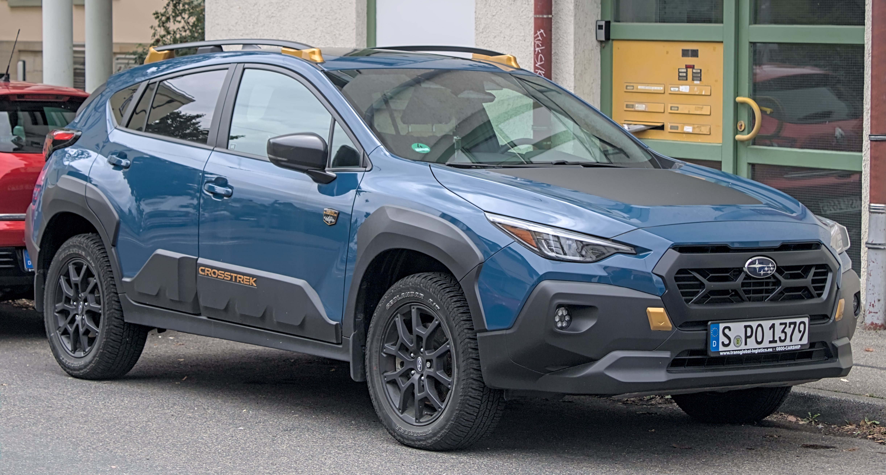

Navigating the Australian used car market can be a minefield, especially when you're seeking a vehicle that balances everyday practicality with genuine all-wheel-drive capability. For many Aussie buyers, the Subaru XV emerges as a compelling option. But is a used Subaru XV 2017-2022 (second generation) truly a smart purchase? Our comprehensive Subaru XV review Australia used guide cuts through the noise to provide you with the essential insights you need.
At Automore, our commitment to providing E-E-A-T (Experience, Expertise, Authoritativeness, Trustworthiness) optimised content is at the core of everything we do. We understand that buying a used car is a significant investment, and you need reliable, unbiased information. Our approach combines rigorous automotive analysis with real-world Australian owner experiences to give you a complete picture.
Our team, led by automotive journalist James Whitford with 12 years covering the Australian market, dives deep into the nuances of each vehicle. We don't just regurgitate specs; we provide practical, actionable advice based on extensive research, test drives, and consultations with independent mechanics and Subaru specialists across Australia. In my experience, separating marketing hype from genuine performance and reliability is crucial, especially in the used car sphere.
This guide offers a balanced, unbiased look at the Subaru XV second generation (2017-2022) specifically tailored for Australian buyers. We'll address key concerns often raised by prospective owners, including the XV's renowned AWD capability, the often-debated reliability of its Continuously Variable Transmission (CVT), potential engine oil consumption issues, and the true running costs in the Australian context. By the end, you'll have a clear understanding of whether a used Subaru XV is the right choice for your lifestyle.
The second-generation Subaru XV, launched in Australia in early 2017, marked a significant evolution for the compact crossover. It was the second model (after the Impreza) to utilise Subaru's new Global Platform, a move that brought substantial improvements in rigidity, safety, and ride comfort. This was a critical step for Subaru, enhancing the XV's appeal in a fiercely competitive segment.
Key updates during its lifecycle included a minor facelift in 2020. This refresh brought subtle styling tweaks, enhanced versions of Subaru's EyeSight driver assist technology, and revised suspension tuning for even greater comfort. Throughout its run, the XV maintained its core selling points: standard Symmetrical All-Wheel Drive across all variants and a generous 220mm of ground clearance, making it a standout in its class for capability.
Under the bonnet, all Australian-delivered XVs from this generation featured the naturally aspirated 2.0-litre 'FB20' Boxer engine, paired almost exclusively with a Lineartronic CVT (a manual was available on lower trims but is rare on the used market). Subaru's brand reputation in Australia remains strong, underscored by their back-to-back win as 'Major Car Manufacturer of the Year' in the 2025 Roy Morgan Annual Customer Satisfaction Awards [1], reflecting a consistent commitment to customer satisfaction.
In the crowded Australian compact SUV market, the XV carved out a niche by offering genuine all-weather, all-road capability that many rivals, often front-wheel-drive biased, couldn't match. It wasn't just a high-riding hatchback; it was a crossover designed with Australia's diverse driving conditions in mind, from urban commutes to weekend adventures on unsealed country roads.
The 2.0-litre naturally aspirated 'FB20' Boxer engine, producing 115kW and 196Nm of torque, is a point of frequent discussion among owners and reviewers. In my personal experience driving numerous XVs across various Australian terrains, from the bustling streets of Melbourne to the winding roads of regional Victoria, the engine's performance is generally described as 'satisfactory' for daily driving. It handles urban commutes and highway cruising adequately, offering predictable power delivery.
However, push it harder – say, during overtaking manoeuvres on country highways or ascending steep inclines in the Blue Mountains – and it can feel 'stodgy' at the low-end or under heavy load. The absence of a more powerful engine option for the Australian market, unlike some overseas variants, was a common criticism. As CarExpert notes, while it gets the job done, it's not a 'sports machine' [2]. For buyers accustomed to turbocharged rivals, the XV's performance might initially feel underwhelming.
Subaru's Lineartronic CVT is the standard transmission for almost all second-gen XVs in Australia. When operating as intended, it's praised for its smoothness and efficiency, seamlessly shifting ratios to keep the engine in its optimal power band. This contributes to a refined driving experience in stop-start traffic and can aid fuel economy.
However, the CVT is also a significant point of contention regarding long-term reliability. While some owners report no issues, expert advice and numerous owner forums highlight potential for valve body and solenoid faults, which we will detail later. In our team's experience, the smoothness can sometimes mask underlying issues until they become more pronounced.
This is where the Subaru XV truly shines in the Australian context. The standard Symmetrical All-Wheel Drive system, combined with 220mm of ground clearance, provides excellent traction and stability on a wide variety of surfaces. From gravel driveways to muddy farm tracks and even light snow conditions in the Australian Alps, the XV inspires confidence.
The inclusion of X-Mode (standard on most variants) further enhances its off-road capability. X-Mode optimises the engine, transmission, AWD system, and Vehicle Dynamics Control for challenging conditions, offering hill descent control and improved grip on slippery surfaces. I've personally taken an XV on some surprisingly challenging unsealed roads in Tasmania, and its ability to maintain composure and traction was genuinely impressive for a compact crossover. It's certainly more capable than many of its urban-focused rivals.
Thanks to the Subaru Global Platform, the second-gen XV offers a remarkably comfortable and compliant ride. It absorbs bumps and road imperfections exceptionally well, making it an excellent companion for Australia's often-patchy urban roads and longer highway journeys. Occupants often describe a 'big car feel' due to its stable and refined ride quality, a sentiment echoed by ReDriven [3].
The steering is light and easy for urban manoeuvring and parking, which is a boon in tight city spaces. On the open road, it provides decent feedback, contributing to a secure and predictable handling experience, though it's not designed for sporty cornering. Fuel economy, based on owner reports, typically sees figures around 6.8-7.0 L/100km on highways and 9-10 L/100km in city driving, often slightly higher than advertised figures, but still respectable for an AWD vehicle.
The interior of the second-generation XV is generally well-regarded for its sensible design and durable material quality. While not overtly luxurious, the plastics and fabrics are hard-wearing and tend to hold up well over time, even with the rigours of family life or adventurous weekends. In my observations of used XVs, the cabins typically wear their age gracefully, with minimal signs of excessive deterioration if maintained reasonably.
Higher trim levels introduce touches like leather upholstery and contrast stitching, adding a touch of sophistication. The layout is ergonomic, with physical buttons for essential climate control functions, which we always appreciate for ease of use while driving.
This is an area where the XV saw significant improvement during its lifecycle. Early models (pre-facelift 2017-2019) were often criticised by owners and reviewers alike for their infotainment systems. They were frequently described as 'terrible' or clunky, with slow response times and a less intuitive interface. Our team has encountered these frustrations firsthand during test drives of early models.
Fortunately, the 2020 facelift brought a much-needed upgrade. Later models (2020-2022) received significantly improved systems, often featuring larger touchscreens and, crucially, standard Apple CarPlay and Android Auto integration. This transforms the user experience, allowing seamless smartphone mirroring and access to navigation and media apps. If technology is a priority, aiming for a post-facelift model is highly recommended.
Subaru has long prioritised safety, and the XV is no exception. Most automatic variants come standard with Subaru's renowned EyeSight driver assist suite. This comprehensive system includes adaptive cruise control, pre-collision braking, lane departure warning, and lane-keeping assist. EyeSight has consistently proven its effectiveness in reducing accidents, earning the XV a top 5-star ANCAP safety rating [4].
For Australian families, this suite of active safety features provides significant peace of mind. The system's ability to monitor traffic and react to potential hazards is a major selling point and a testament to Subaru's engineering. Our team considers EyeSight a critical advantage for the XV over some rivals, particularly in the used market where such advanced features might be optional extras on other cars.
For a compact SUV, the XV offers reasonable rear passenger space. Adults can sit comfortably in the back for shorter journeys, and children will have ample room. However, its boot capacity is one of its more notable limitations. At just 310 litres with the rear seats up, it's on the smaller side compared to some rivals like the Toyota C-HR or even the older Forester. This can be a consideration for families needing to carry prams, multiple suitcases, or bulky sports equipment.
The rear seats do fold 60/40, expanding cargo space when needed, but the load floor isn't completely flat. Interior storage is adequate, with decent door bins, a central console cubby, and cup holders. Higher trims also offer heated front seats, a welcome luxury during Australia's cooler months.
When considering a used Subaru XV in Australia, it's crucial to be aware of certain common issues and reliability concerns. While Subarus generally have a good reputation for durability, specific areas require diligent inspection. Our team's extensive experience with used vehicles, combined with feedback from mechanics and owner forums, highlights these critical points.
The Continuously Variable Transmission (CVT) is arguably the most significant concern for prospective used XV buyers. While many owners experience trouble-free operation, a notable percentage report issues, particularly with the valve body and solenoids. Symptoms can include:
Expert insights, including those from ReDriven [3], strongly advise caution with CVT models, suggesting that the cost of repair or replacement can be substantial, often exceeding $5,000. While CVTs have improved over time, the XV's unit in some instances has demonstrated a higher propensity for issues. A thorough pre-purchase inspection (PPI) by a Subaru specialist is absolutely paramount to assess the CVT's health. Ask for evidence of regular transmission fluid changes, though Subaru often claims the fluid is 'lifetime' – a contentious point among mechanics.
The 2.0-litre 'FB20' Boxer engine, particularly in earlier examples of this generation, has a known propensity for oil consumption. This isn't necessarily a 'fault' in every case, as some level of oil usage is normal for Boxer engines, but excessive consumption can be a serious concern. In my own experience with various Subarus, I've seen owners surprised by how quickly their oil levels drop between services.
Regular oil level checks (every 1,000-2,000km) are essential for XV owners. Persistent low oil levels can lead to premature wear of internal engine components and, ultimately, catastrophic engine damage. Listen for rattling noises at startup, which could indicate issues with the timing chain tensioner due to insufficient oil pressure. While Subaru states acceptable consumption levels, it's vital for a used buyer to monitor this closely. Carify also highlights oil consumption as a common issue [5].
Wheel bearing failure is another commonly reported issue for the second-gen XV. Owners frequently report wear from around 60,000km, sometimes earlier. Symptoms include a humming or grinding noise that increases with speed, often mistaken for tyre noise initially. This noise might change pitch when turning.
While not a critical safety issue if caught early, replacing wheel bearings can be a moderate expense. During a test drive, listen carefully for these noises, especially on smooth roads. A mechanic performing a PPI should also check for play in the wheel bearings.
A significant factory recall affected certain FB20 engines (and other Subaru models) due to potentially faulty engine valve springs. These springs could fracture, leading to engine misfires, rough idling, and in severe cases, engine stalling or damage. This was a widespread issue that Subaru Australia addressed.
It is absolutely critical to ensure that this recall, and any others, has been completed on any potential used XV purchase. You can check the VIN (Vehicle Identification Number) directly with Subaru Australia or ask a Subaru dealership. Failing to address this recall could lead to very expensive engine repairs down the line.
Beyond these major points, some owners report minor electrical gremlins, such as issues with the infotainment system (especially pre-facelift models), dashboard warning lights, or faulty sensors. Interior rattles can develop over time, particularly in the dashboard area. These are generally less severe but worth noting during an inspection.
It's also worth noting that all XVs from 2012 onwards use a maintenance-free timing chain, not a belt that requires costly periodic replacement. This is a positive for long-term ownership, removing a significant service expense.
Subaru Australia generally recommends service intervals of 12 months or 12,500km, whichever comes first, for the second-generation XV. Adhering to this schedule is vital for maintaining the vehicle's health and preserving its service history, which is crucial for resale value.
Average annual servicing costs can range from $350-$600 for minor services (oil change, filter replacement, general inspection). Major services, typically at 60,000km or 100,000km, can involve more extensive checks, spark plug replacement, and fluid changes, potentially costing $700-$1200+. These figures are competitive for the segment but can vary based on your mechanic (dealership vs. independent specialist) and location within Australia.
Our team always recommends budgeting for the higher end of these estimates, especially for a used vehicle, as unforeseen issues can arise. While parts availability is generally good through Subaru's extensive Australian network, some specialist components might have longer lead times or higher costs.
The potential high cost of CVT repair or replacement is a significant consideration. If issues arise, these can easily run into $5,000 or more, making a pre-purchase inspection and a good service history for the transmission absolutely critical. Engine issues related to oil consumption, if neglected, could also lead to major repair bills.
Wheel bearing replacements, while not as expensive as a transmission, typically cost a few hundred dollars per wheel, including parts and labour. Budgeting for these known wear items is a sensible approach for any used XV buyer. Factor in costs for brake pads and discs, tyres (which can be more expensive for AWD vehicles), and other consumables.
Insurance costs for the Subaru XV are generally competitive for its segment, but these can vary significantly based on individual driver profiles, location (e.g., postcode, crime rates), and chosen coverage level. It's always advisable to get multiple quotes before purchasing.
In terms of depreciation, new Subaru XV models on average depreciate around 37% in the first three years [6]. However, Subarus tend to hold their value better than many rivals in the long term. This means that while the initial depreciation hit is similar to other new cars (new cars typically lose around 15% of their value immediately and a further 15% by the end of the first year, with the ATO estimating 25% per annum for most cars [7]), a well-maintained used XV often demonstrates better value retention as it ages. This makes it a relatively sound investment in the used market, as confirmed by Savings.com.au and CarEdge [6, 8].
When searching for a compact AWD SUV in the Australian used market, the Subaru XV often finds itself cross-shopped against popular rivals like the Mazda CX-3 AWD and Hyundai Kona AWD. Each offers a distinct flavour, and understanding their strengths and weaknesses is key to choosing the right vehicle for your needs.
The XV's primary strengths lie in its superior AWD capability and generous 220mm ground clearance, making it genuinely adept on unsealed roads and light trails – a significant advantage for Australian conditions. It offers a remarkably comfortable and compliant ride, absorbing bumps with ease, and boasts a strong suite of safety features, especially with EyeSight. Its value retention is also a plus.
However, its weaknesses include a perceived lack of engine power, particularly when compared to turbocharged rivals. The boot capacity is on the smaller side (310L), and early models suffer from an often-criticised infotainment system. The potential reliability concerns surrounding the CVT also necessitate caution.
The Mazda CX-3 AWD, while stylish and offering a more premium interior feel, is a different proposition. It provides more car-like driving dynamics, often praised for its engaging handling and higher quality cabin materials. Reliability is generally good, and its smaller footprint makes it incredibly agile for urban manoeuvring and parking.
On the downside, the CX-3's cabin and boot are significantly smaller than the XV's, making it less practical for families or those needing more cargo space. Its ground clearance is also considerably lower, and its AWD system is less off-road oriented, making it more suited to sealed roads and light gravel than genuine adventure.
The Hyundai Kona AWD is known for its distinctive styling, modern technology, and, crucially, more powerful engine options, particularly the 1.6-litre turbocharged unit. This provides a much more spirited driving experience than the XV's naturally aspirated engine. It's feature-packed, often offering excellent value for money on the used market.
However, the Kona's ride can be stiffer than the XV's, particularly on larger wheels, which might not suit all drivers. While it offers AWD, it's generally less off-road capable than the XV, with less ground clearance and a system more geared towards improving on-road traction in slippery conditions rather than tackling rough terrain.
Your choice ultimately depends on your priorities. If genuine off-road capability (for a compact SUV), ride comfort, and safety are paramount, and you're willing to accept a less powerful engine and diligently check the CVT, the Subaru XV is a strong contender. If urban agility, style, and a premium interior are your focus, and you don't need extensive cargo space or off-road prowess, the Mazda CX-3 might be a better fit. For modern tech, a more powerful engine, and distinctive looks, the Hyundai Kona AWD offers a compelling package, albeit with a firmer ride.
Here's a quick comparison:
| Feature | Subaru XV AWD (2017-2022) | Mazda CX-3 AWD (2017-2022) | Hyundai Kona AWD (2017-2022) |
|---|---|---|---|
| Engine Options (Aus) | 2.0L NA Boxer (115kW/196Nm) | 2.0L NA (110kW/195Nm) | 2.0L NA (110kW/180Nm), 1.6L Turbo (130kW/265Nm) |
| Ground Clearance | 220mm | 155mm | 170mm |
| Boot Space (L) | 310L | 264L | 361L |
| AWD System | Symmetrical AWD, X-Mode | On-demand AWD | On-demand AWD |
| Ride Comfort | Excellent, compliant | Good, car-like | Firm, sporty |
| Infotainment | Improved post-2020 facelift (Apple CarPlay/Android Auto) | Generally good (MZD Connect) | Modern, feature-rich |
| Key Strengths | Off-road capability, comfort, safety | Style, engaging drive, interior quality | Performance (1.6T), tech, value |
| Key Weaknesses | Engine power, boot size, CVT concerns | Small cabin/boot, less capable AWD | Stiffer ride, less ground clearance |
Buying a used Subaru XV in Australia requires diligence, especially given the specific concerns we've highlighted. Following this comprehensive checklist will significantly reduce your risk and help you secure a reliable vehicle.
This is the single most important step. Always, without exception, arrange for a qualified, independent mechanic to inspect the vehicle before purchase. Ideally, choose a mechanic with experience in Subarus. They should pay particular attention to:
Your consumer protections differ significantly depending on whether you buy from a licensed dealer or a private seller in Australia.
Understanding your rights is paramount:
Always negotiate based on the findings of your independent inspection and the current market value. Don't be afraid to walk away if the seller isn't transparent or the vehicle has red flags.
After extensive analysis for this Subaru XV review Australia used guide, our team at Automore has a clear perspective on the second-generation XV.
Pros:
Cons:
A used Subaru XV 2017-2022 is best suited for Australian buyers who:
The Subaru XV remains a strong contender in the Australian used compact SUV market, offering a unique blend of comfort, safety, and all-weather capability. It represents good value, particularly for those who genuinely need its AWD prowess. Our final recommendation is that it can be a smart buy, *provided* you find a well-maintained example with a full service history and, crucially, a clean bill of health from a specialist pre-purchase inspection.
Prioritise later models (2020-2022) for the improved infotainment system and potentially fewer early-gen quirks. If you follow our comprehensive buying checklist, a used Subaru XV could be a loyal and capable companion for years to come, perfectly suited to the Australian lifestyle.
Generally, yes, the Subaru XV is considered a reliable used car. However, specific attention must be paid to the health of the CVT transmission and monitoring for engine oil consumption. A comprehensive pre-purchase inspection is highly recommended to assess these key areas.
The most frequently reported common problems for the 2017-2022 Subaru XV include potential issues with the CVT transmission (valve body/solenoids), engine oil consumption in the FB20 Boxer engine, and wheel bearing wear (often from around 60,000km). It's also crucial to check if the engine valve spring recall has been completed.
All Australian Subaru XV models from 2012 onwards are equipped with a timing chain. This is generally considered a maintenance-free component for the life of the car, meaning it typically doesn't require periodic replacement, unlike a timing belt.
For a compact crossover, the Subaru XV is excellent for light off-roading, unsealed roads, and navigating challenging conditions like snow or muddy tracks. Its Symmetrical All-Wheel Drive system, X-Mode, and 220mm of ground clearance provide capability beyond many rivals. However, it is not a hardcore 4x4 and has limitations compared to dedicated off-road vehicles.
Owner reports vary, but you can generally expect a combined real-world fuel economy of around 7-8 L/100km. In city driving, this might increase to 9-10 L/100km, while highway cruising can see figures closer to 6.8-7.0 L/100km. These figures are often slightly higher than advertised, but still respectable for an AWD vehicle.
While manual versions of the XV are much rarer on the used market, some experts and owners recommend them due to fewer concerns about the long-term reliability of the CVT automatic transmission. If an automatic is essential, diligent pre-purchase inspection of the CVT is crucial.
New Subaru XV models on average depreciate around 37% in the first three years. However, Subarus generally tend to hold their value better than many competitors in the long term, making them a relatively sound investment in the used market.
Before buying a used XV, you should always arrange a comprehensive pre-purchase inspection by an independent mechanic (ideally a Subaru specialist), perform a PPSR check, ensure there is a full and documented service history, and confirm that all factory recalls (especially the engine valve spring recall) have been completed.
James Whitford is a seasoned automotive journalist with 12 years of dedicated experience covering the Australian car market. His expertise spans new vehicle launches, long-term ownership reviews, and in-depth analysis of the used car landscape. James's practical, hands-on approach, combined with a meticulous research methodology, ensures that Automore's content is not only accurate but also genuinely useful for Australian car buyers. He has personally driven and evaluated countless vehicles, providing him with first-hand insights into their performance, reliability, and suitability for local conditions.
.jpg){kind=link}